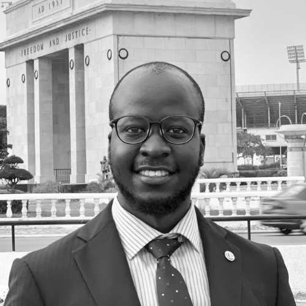

EDUCATION

|  |
Vialey LutayaContact DetailsGlobal Fundraiser | Curriculum Developer | Uganda Tourism Goodwill Ambassador |
EDUCATION |
|
| July 2019 - Present |
|
| November 2019 - Present |
|
| July 2019 - Present |
|
| February 2018 – June 2019 |
|
| February 2013 - Present |
|
| April 2016- March 2018 |
|